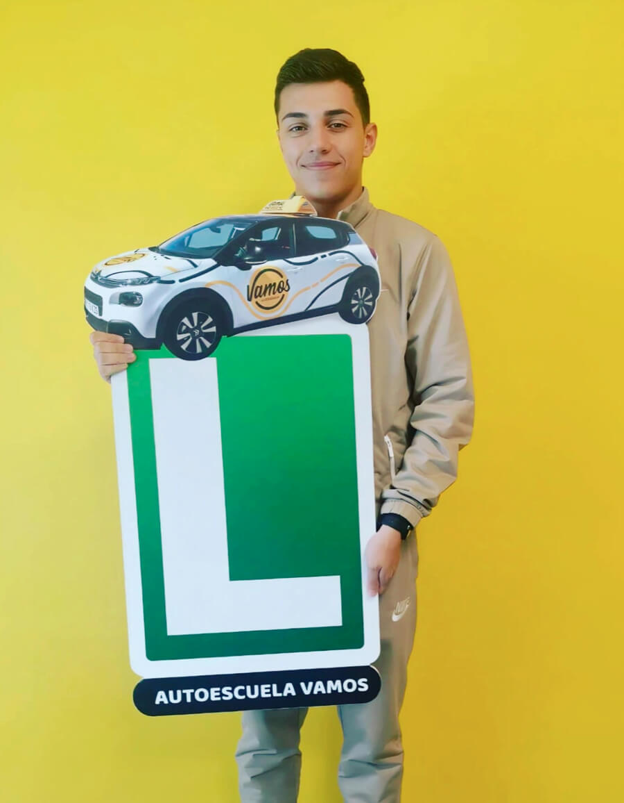
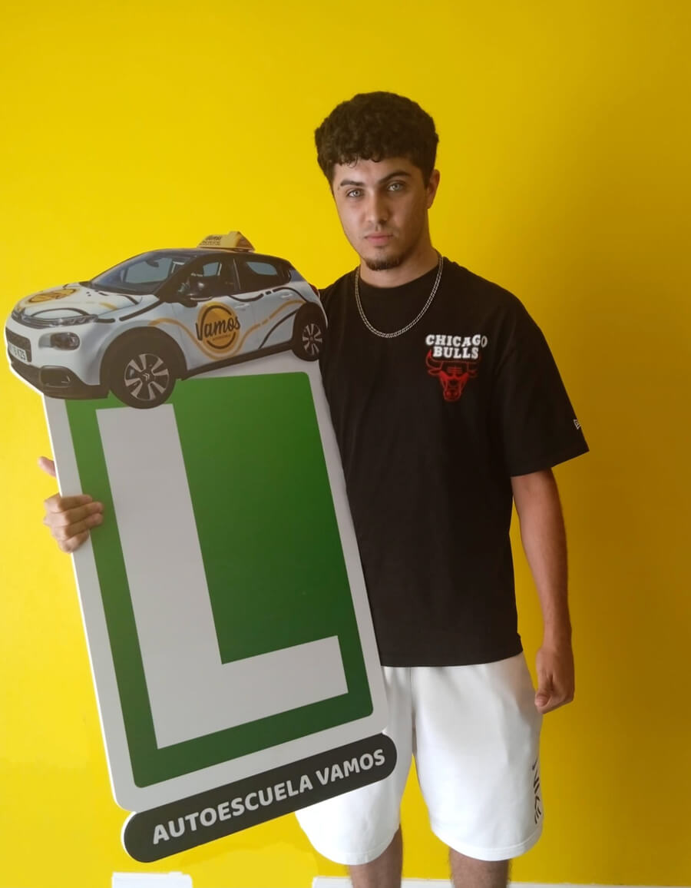
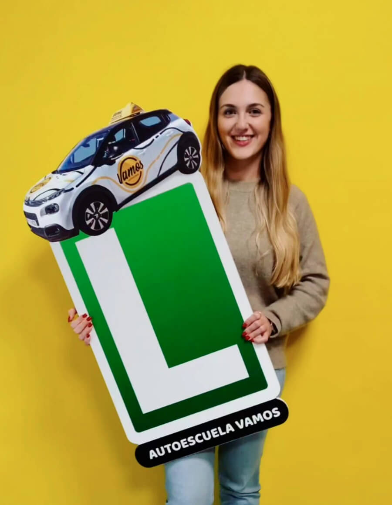
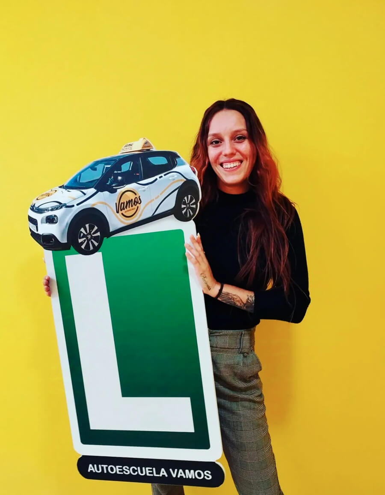
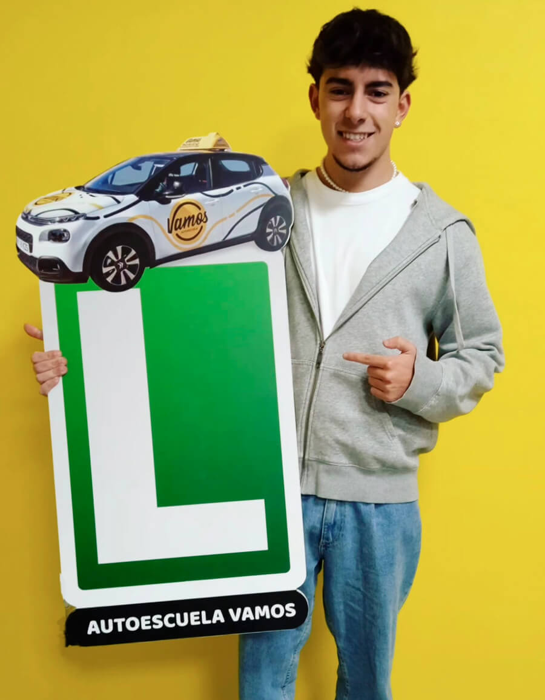
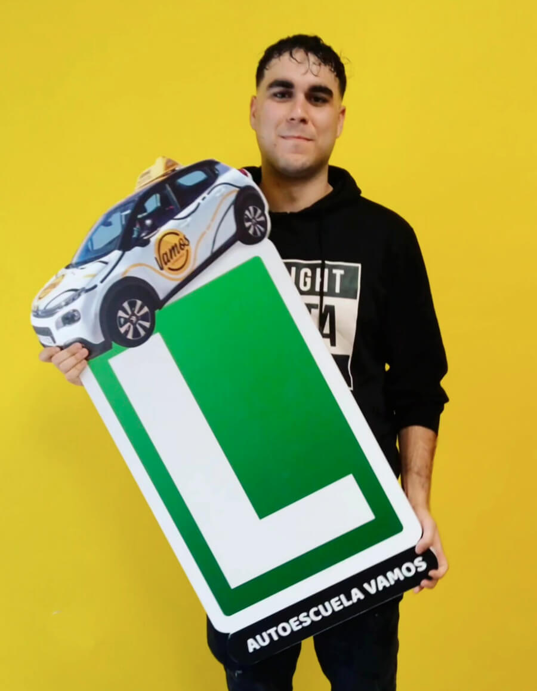
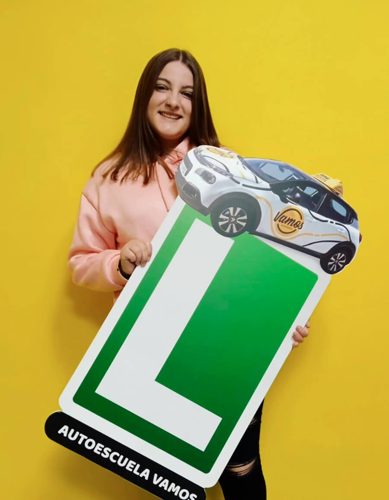

Carnet de coche
Permiso B para vehículos de hasta 3.500 kg. Teoría presencial u online, prácticas con horarios flexibles y recogida a domicilio.
Ver carnet de coche
Carnet de coche, carnet de moto A2 y clases de reciclaje. Formación teórica presencial y online, profesorado con experiencia y un ambiente familiar donde avanzas a tu ritmo.

En Autoescuela Vamos trabajamos con un objetivo claro: que aprendas a conducir con seguridad y confianza. Nuestro equipo de profesores tiene experiencia y vocación, y se adapta al ritmo de cada alumno.
Somos la autoescuela más cercana al centro de exámenes de Guadalajara, lo que te permite practicar los recorridos reales de examen desde el primer día.
Tres servicios de formación vial adaptados a tus necesidades: desde sacarte el carnet por primera vez hasta recuperar la confianza al volante.
Permiso B para vehículos de hasta 3.500 kg. Teoría presencial u online, prácticas con horarios flexibles y recogida a domicilio.
Ver carnet de cocheMotos de hasta 35 kW (47 CV). Prácticas con Honda CB500 Hornet, exámenes en circuito cerrado y en vías abiertas.
Ver carnet de motoPara conductores con carnet que necesitan recuperar confianza, perder el miedo al volante o practicar maniobras concretas.
Ver clases de reciclajeEl próximo puedes ser tu. Vamos.
Desde la primera llamada hasta que tienes el carnet en la mano, te acompañamos en cada fase del proceso.
Contacta con nosotros, te explicamos todo y formalizamos tu alta. Sin letra pequeña ni sorpresas.
Teoría presencial o por Google Meet, tests ilimitados online y clases prácticas a tu ritmo, con horarios de mañana y tarde.
Prácticas los recorridos reales del examen. Cuando estés listo, vas al examen con confianza y seguridad.






Autoescuela Vamos tiene un 5.0 en Google Maps con 99 opiniones verificadas. Consulta las opiniones de nuestros alumnos directamente en Google.
99 opiniones verificadas con la máxima puntuación. Nuestros alumnos valoran el trato cercano y la profesionalidad.
Más de mil alumnos ya han conseguido su carnet con nosotros en Guadalajara y Villanueva de la Torre.
Dos sedes para estar cerca de ti: Guadalajara centro y Villanueva de la Torre (C.C. Valgreen).

Elige cómo prepararte: clases presenciales en nuestra academia de Guadalajara o clases en directo por Google Meet desde tu casa. Disponemos de horario de mañana y tarde.
Además, accedes a tu aula virtual con tests ilimitados y un profesor disponible por WhatsApp para resolver tus dudas cuando las tengas.
No. La mayoría de nuestros alumnos empiezan de cero. Adaptamos la formación a tu ritmo, con clases teóricas presenciales u online y prácticas personalizadas.
Si. Ofrecemos clases teóricas presenciales en nuestra academia y también online en directo por Google Meet, en horario de mañana y tarde.
Son 30 preguntas tipo test con 30 minutos para resolverlas. Se permiten un máximo de 3 fallos. Dispones de hasta 3 convocatorias sin renovar tasas.
Si. Son clases prácticas personalizadas para personas que ya tienen carnet pero necesitan recuperar confianza, perder el miedo al volante o practicar maniobras concretas como aparcar.
Estamos en Calle de Rufino Blanco 7, Guadalajara (19002), y en Av. de Pico Ocejon 2 (C.C. Valgreen), Villanueva de la Torre (19209). Llámanos al 642 909 112 o escríbenos por WhatsApp.
Ofrecemos el permiso A2 para motos de hasta 35 kW (47 CV). Prácticas con Honda CB500 Hornet. Si ya tienes carnet B, puedes estar exento del teórico común.
Tenemos dos centros en la zona: Guadalajara centro y Villanueva de la Torre. Contacta con nosotros y te informamos sin compromiso.